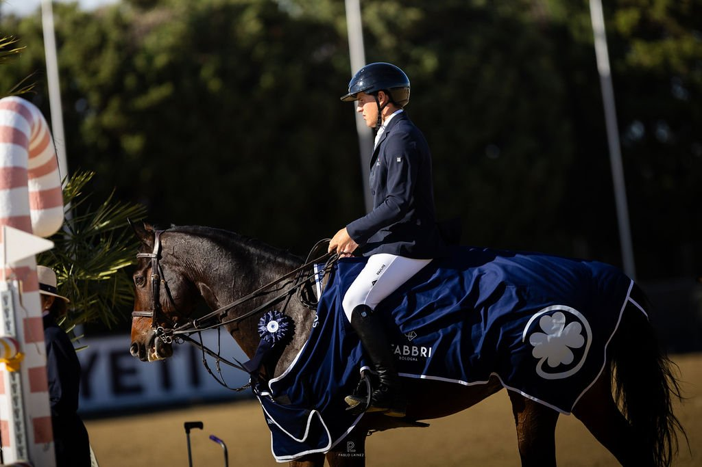

Vandoorne y «Gaudi de Hus» paran el crono en 35,04 s y ganan el Pequeño Gran Premio Fabbri
El belga fue el más rápido de los seis binomios que repitieron cero en el desempate de la prueba de 1,45 m del CSI4*. Castora Ortiz Agüera, quinta con «Robinson», fue la mejor española.

Fue una carrera de centésimas. Sesenta y ocho binomios saltaron el Pequeño Gran Premio – Trofeo Fabbri, puntuable para el Ranking Longines, en la pista Milton de Dehesa Montenmedio. Trece hicieron cero en el recorrido inicial y seis volvieron a terminar sin faltas en el desempate. Axel Vandoorne y «Gaudi de Hus» pararon el crono en 35,04 segundos, el mejor registro.
Robin Lesqueren fue segundo con «Galax du Rouet», en 35,70, y Mathieu Guery tercero con «Sir Minka Z», en 35,76. Cédric Angot terminó cuarto con «Harmony de Grandry», en 36,06.
Quinta, a cuatro centésimas del cuarto puesto, quedó Castora Ortiz Agüera con «Robinson»: cero en el recorrido inicial y cero en el desempate, con 36,10 segundos. Es el mejor resultado español de la prueba. Álex Codina también se clasificó para el desempate con «London Blue», pero se retiró en él y compartió la undécima plaza. Pello Elorduy con «Champenoise de Rampan», decimoséptimo, y Luis Ortiz Agüera con «Hvedholms Cashew», decimonoveno, acabaron con cuatro puntos en el recorrido inicial.
La jornada del sábado en el VI Andalucía October Tour dejó más resultados. En la prueba de 1,40 m del CSI4*, a dos fases especiales, ganó el alemán David Will con «Dream Star One», sin faltas y con 25,97 segundos en la segunda fase. Por detrás quedaron Mathieu Michot con «Infini de Me», en 26,37, y Anne-Kristine Rie Truelsen con «Quemoy KT», en 26,59. Pilar Cordón fue sexta con «Noblesse du Palis», sin penalizaciones en 26,86, la mejor española.
En el CSI1* de 1,20 m, José Antonio García Diana subió al podio con «Occon G»: tercero, con 57,56 segundos, por detrás de la británica Millicent Cornock con «Icarus HK» (55,18) y del portugués Martim Ramos con «Lamire» (57,32).
Por Lucía Valdeolmos